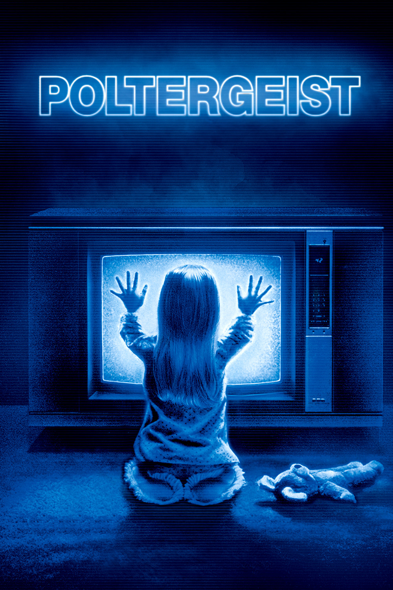

Мировая премьера: 4 июня 1982
Слоган: Он знает, как тебя напугать.
Сюжет: Жизнь обычной калифорнийской семьи Фрилингов проходит весьма безмятежно... до тех пор, пока в их тихий пригородный дом не вторгаются потусторонние силы. Всё начинается с пары странных происшествий, но вскоре дом превращается в настоящий водоворот сверхъестественных явлений. Эти силы явно не настроены дружелюбно – и если несчастная семья не уберётся оттуда вовремя, всех их затянет в кошмарный хаос!
Режиссёр: Тоб Хупер
В ролях: ДжоБет Уильямс, Крэйг Т. Нельсон, Оливер Робинс
| ДжоБет Уильямс | Диана Фрилинг |
| Крэйг Т. Нельсон | Стив Фрилинг |
| Оливер Робинс | Робби Фрилинг |
| Беатрис Стрэйт | Доктор Леш |
| Хезер О'Рурк | Кэрол Энн Фрилинг |
| Зельда Рубинштейн | Танжина Бэрронс |
| Доминик Данн | Дэна Фрилинг |
| Ричард Лоусон | Райан |
Бюджет: $ 11 млн.
Кассовые сборы в США: $ 77 млн.
Кассовые сборы в мире: $ 77 млн.
Продолжительность: 1 ч. 51 мин.
Рейтинг: 7.3